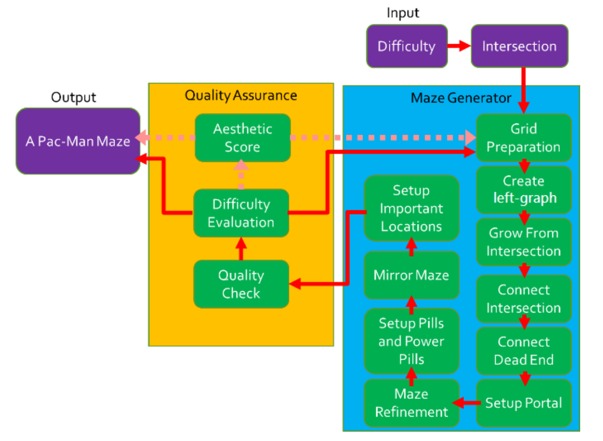

Document
Paper here!
Notes
My own notes
A brief summary
-
Abstract
- Pac-Man levels generated at specific difficulties with respect to number of intersections and elements given.
- Also used an aesthetic score to check if the maze is Pac-Man worthy.
-
Introduction
- 99% of the levels produced are playable.
- 40ms generation time.
-
Methodology
-
Metrics for a Pac-Man game
- Ghost house
- Maze
- Pills & Power Pills
- Positioning of the Sprites
-
Framework

- Difficulty vs Intersections
-
Maze Generation
- Grid Preperation: 31x29 grid, same as the original Ms. Pac-Man.
-
Left Graph
- Place the ghost house
- Place the walls, with height of 2 or 3. Left first, up then, low at the end.
- Eliminate adjacent nodes. Two nodes, and no edge between them => merge two nodes.
-
Grow From Intersections
- Grow from ghost house's intersections.
- Grow from cornet intersections.
- Uniformly choose from remaining intersections to grow from.
- Set pac-man starting point.
-
Connecting intersections
- Ignore tunnel grown from ghost house.
- Connect tunnels and intersections.
- Connect dead ends.
- Repeat until left graph is fully connected.
-
Connect remaining dead ends.
-
Setup Portals
- If dead ends can be connected to the left-most border,do it and place a portal at the end.
- If no portal can be placed, randomly grow a node to generate at least one.
-
Maze Refinement: Reduce 2x2 walls as much as possible.
-
Setup pills & power pills
-
Mirror maze to right.
-
Setup important locations.
-
Quality Assurance
-
Difficulty Evaluation
Diff = Weighted sum of (# of Risk tunnels, # of Tunnels, # of Intersections, # of T-Intersections, and # of Pills with Maze size.)
-
Aesthetic Score
Aest = Weighted sum of (Maze area, # of corridors, st. dev. of the block size, st. dev. of the distance between intersections, st. dev. of the distribution of intersections, st. dev. of the distribution of T-Intersections.)